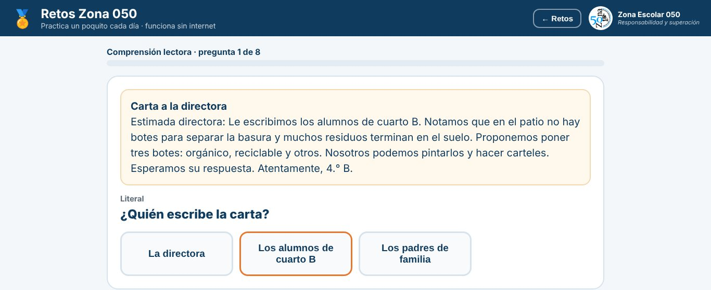
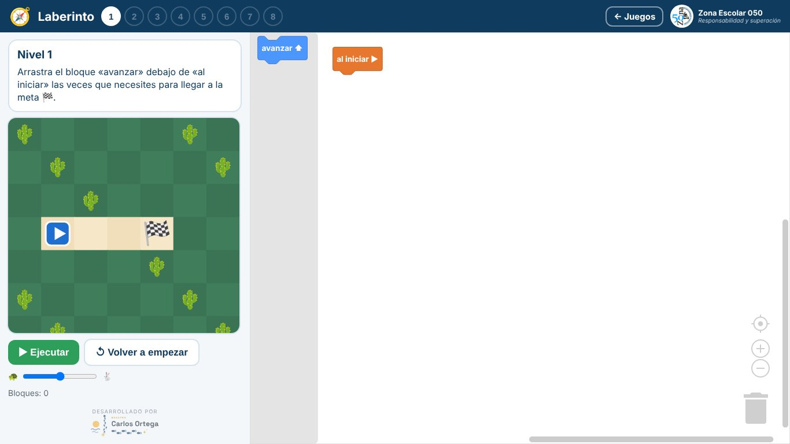
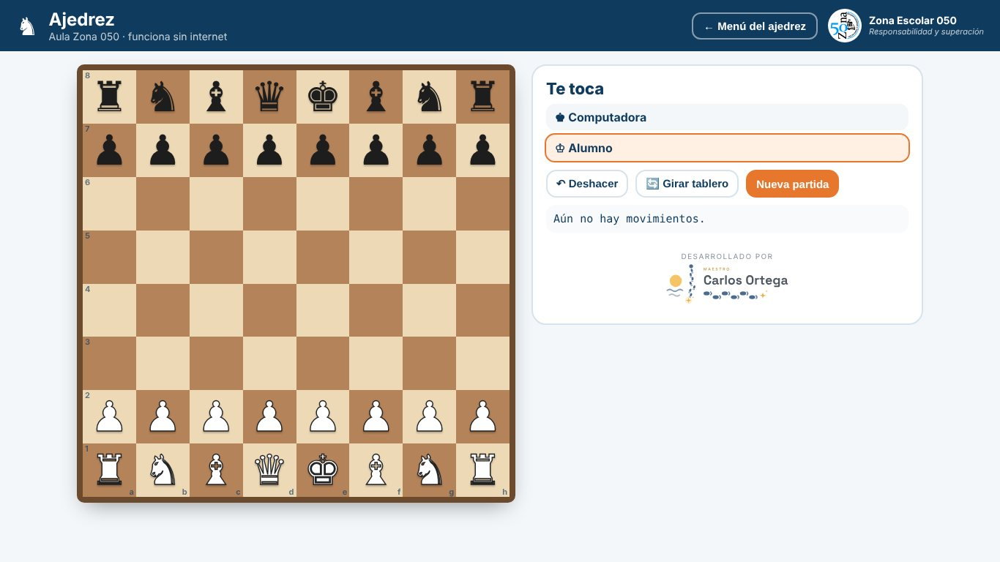
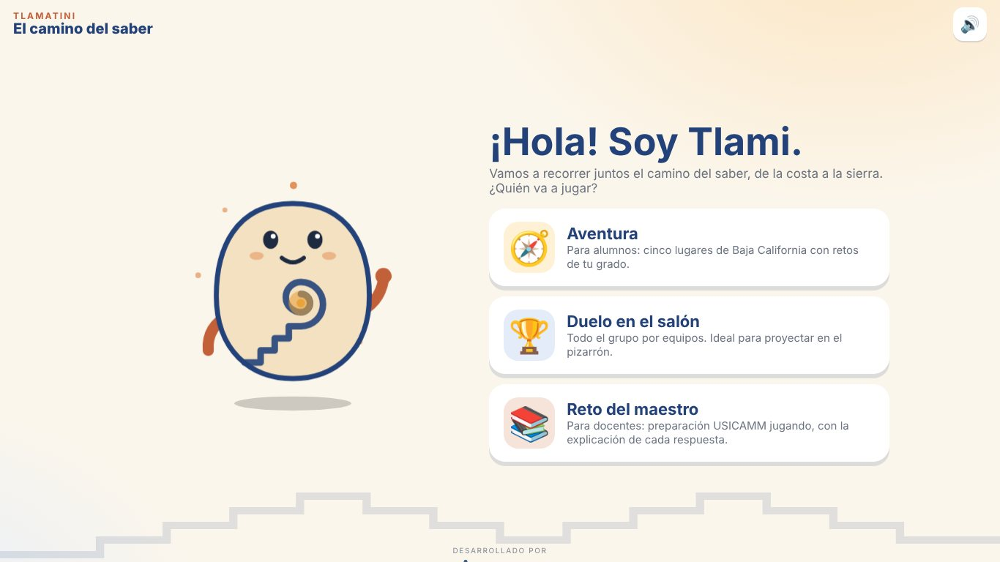
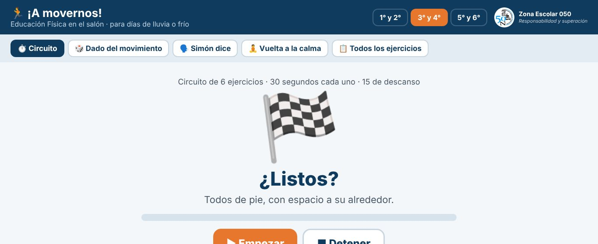
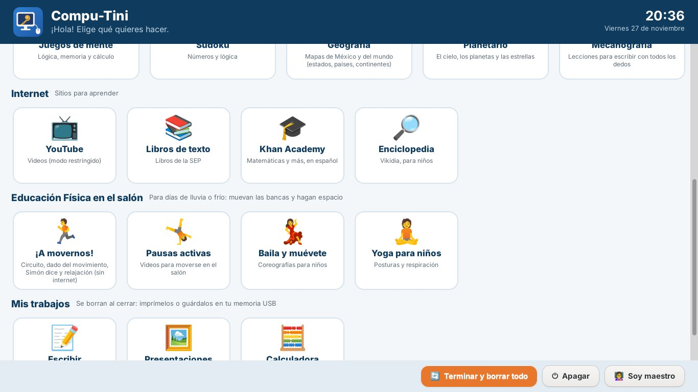
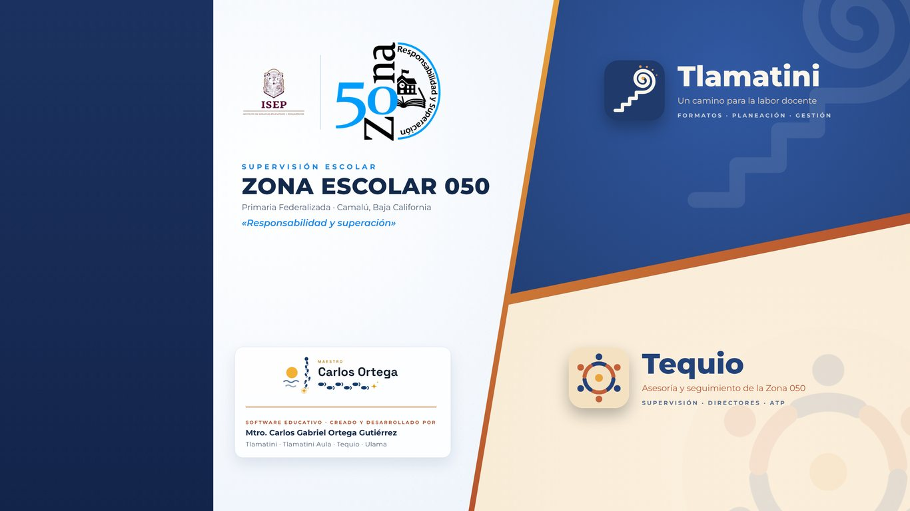
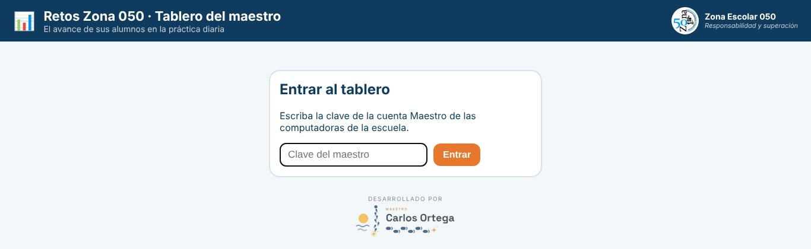
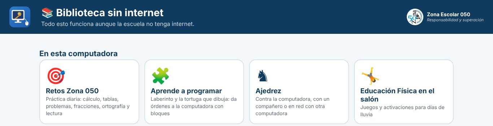

Por qué rescatar las computadoras
En muchas escuelas hay computadoras guardadas porque ya no sirven como antes: tienen Windows 7, poca memoria o procesadores de hace más de diez años. Se volvieron lentas, ya no reciben actualizaciones y nadie se anima a usarlas.
La Mesa Técnica de la Supervisión desarrolló Compu-Tini: un sistema ligero (Linux Mint) con programas educativos en español, preparado para que esas mismas computadoras arranquen rápido y sean útiles otra vez en el aula. No hay que comprar equipo nuevo ni pagar licencias.
Core 2 Duo
Computadoras de escritorio de cualquier marca (Dell, HP y otras) con 2 GB de memoria y Windows 7.
iMac
Modelos de 2008 a 2012, que ya no reciben actualizaciones de Apple.
i5 de 2.ª generación
Equipos un poco más nuevos, con espacio para guardar también la Wikipedia en español.
Lo que pueden hacer los alumnos
Al encender la computadora entra sola la cuenta Alumno con la pantalla de Compu-Tini: botones grandes, todo en español y ordenado por secciones.
Aprender jugando
Programas educativos reconocidos, en español y sin anuncios:
- GCompris: lectura, números, ciencias y más de cien actividades.
- Pintar con Tux Paint, Matemáticas con un juego de operaciones y Teclado para aprender a escribir.
- Juegos de mente, sudoku, geografía de México y del mundo, mecanografía y un planetario para conocer el cielo.

Retos Zona 050
Práctica diaria de diez preguntas, según el grado del alumno: cálculo mental, tablas de multiplicar, problemas, fracciones, ortografía y comprensión lectora, con lecturas para cada grado.
El alumno escribe su nombre, su grado y su grupo, y su avance queda guardado para que el maestro lo revise.

Aprende a programar
Con bloques en español que se arrastran, los alumnos dan órdenes a la computadora: en el Laberinto llevan el carrito hasta la meta y con la tortuga que dibuja trazan figuras, estrellas y patrones.
Cada actividad tiene ocho niveles que se desbloquean al resolver el anterior. Se puede trabajar en parejas: uno arrastra los bloques y el otro explica qué hará el programa.

Ajedrez, también en red
Los alumnos juegan contra la computadora (fácil, medio o difícil), con un compañero en la misma máquina o con otra computadora de la escuela, sin internet. También hay una sección para aprender cómo se mueve cada pieza.

El camino del saber
Tlami acompaña a los alumnos en una aventura por cinco lugares de Baja California, con retos de su grado. El grupo completo puede jugar un duelo por equipos proyectado en el pizarrón.

Educación Física en el salón
Para los días de lluvia o de frío: circuitos con tiempo, el dado del movimiento, Simón dice y ejercicios de relajación, por ciclo escolar y sin internet. Con conexión hay además pausas activas, bailes y yoga para niños.

Internet seguro y sus trabajos
- Cuando hay conexión: YouTube en modo restringido, los libros de texto de la SEP, Khan Academy y una enciclopedia para niños.
- Mis trabajos: escribir textos y hacer presentaciones (como Word y PowerPoint) y una calculadora.
- Al tocar «Terminar y borrar todo» la computadora queda limpia para el siguiente alumno. Los trabajos se imprimen o se guardan en una memoria USB.
Lo que puede hacer el maestro
Con el botón «Soy maestro» se pasa a la cuenta Maestro, que se abre con una clave. Ahí el docente tiene sus plataformas, programas de oficina y las herramientas para acompañar a sus alumnos.

Plataformas de la zona
- Tlamatini
- Tlamatini Aula
- Misioneros del Inglés
- RELweb
Trabajo en línea
- Gmail y Drive
- Classroom
- Meet (videollamadas)
- Asistente de inteligencia artificial
Oficina y PDF
- Documentos (como Word)
- Hojas de cálculo (como Excel)
- Presentaciones (como PowerPoint)
- Llenar, firmar, unir y ordenar PDF
- Impresora de la dirección en red
Para la clase
- La pantalla del alumno, para proyectarla
- Biblioteca sin internet
- Aprende a programar
- Avance de los Retos
- YouTube

El avance de sus alumnos
En el tablero de Retos Zona 050 el maestro ve cuántos alumnos practicaron, cuántos retos completaron, el porcentaje de aciertos por tema y quiénes necesitan apoyo. Así sabe qué reforzar en clase.

La biblioteca de la escuela
Una computadora de la escuela funciona como servidor: guarda los resultados de los retos, organiza el ajedrez en red y comparte con todas las demás:
- La carpeta de la escuela, donde el maestro deja videos, libros en PDF y audios para sus grupos.
- Enciclopedia, diccionario y simulaciones de ciencias sin internet.
- Kolibri: videos y ejercicios de Khan Academy en español, cuentos ilustrados y experimentos.
Cómo llega a cada escuela
La Supervisión prepara las computadoras sin costo para la escuela:
- La escuela envía a la Supervisión el inventario de sus computadoras antiguas.
- La Supervisión instala Compu-Tini en cada equipo, según su tipo.
- Las computadoras regresan a la escuela: una para el maestro y las demás para los alumnos, conectadas en red.
Compu-Tini se presentó a los directivos en la tercera sesión del Consejo Técnico de Zona, con una computadora HP rescatada funcionando.
Leer la nota →